整合spring、springMVC、MyBatis、Junit、JPA、Redis
整合spring
springboot本就是spring的引申，就没有整合spring的说法，只是为了统一标题。springboot早就给我们整合好了spring、springMVC等
IOC
读取properties案例
java配置主要靠java类和一些注解来达到和xml配置一样的效果，比较常用的注解有：
@Configuration：声明一个类作为配置类，代替xml文件@Bean：声明在方法上，将方法的返回值加入Bean容器，代替<bean>标签@Value：属性注入@PropertySource：指定外部属性文件。
我们接下来用java配置来尝试实现连接池配置
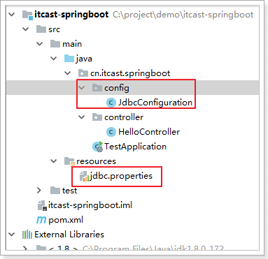
首先在pom.xml中，引入Druid连接池依赖：
<dependency>
<groupId>com.github.drtrang</groupId>
<artifactId>druid-spring-boot2-starter</artifactId>
<version>1.1.10</version>
</dependency>
添加jdbc.properties
jdbc.driverClassName=com.mysql.jdbc.Driver
jdbc.url=jdbc:mysql:///mybatis/test?useUnicode=true&characterEncoding=utf-8&useSSL=false
jdbc.username=root
jdbc.password=0217
配置数据源
创建JdbcConfig类：
package uestc.zhangkx.Config;
import com.alibaba.druid.pool.DruidDataSource;
import org.springframework.beans.factory.annotation.Value;
import org.springframework.context.annotation.Bean;
import org.springframework.context.annotation.Configuration;
import org.springframework.context.annotation.PropertySource;
import javax.sql.DataSource;
@Configuration
@PropertySource("classpath:application.properties")
public class JdbcConfig {
@Value("${jdbc.url}")
String url;
@Value("${jdbc.driverClassName}")
String driverClassName;
@Value("${jdbc.username}")
String username;
@Value("${jdbc.password}")
String password;
@Bean
public DataSource dataSource(){
DruidDataSource dataSource = new DruidDataSource();
dataSource.setUrl(url);
dataSource.setDriverClassName(driverClassName);
dataSource.setUsername(username);
dataSource.setPassword(password);
return dataSource;
}
}
解读：
@Configuration：声明JdbcConfiguration是一个配置类。@PropertySource：指定属性文件的路径是:classpath:jdbc.properties- 通过
@Value为属性注入值。 - 通过@Bean将
dataSource()方法声明为一个注册Bean的方法，Spring会自动调用该方法，将方法的返回值加入Spring容器中。相当于以前的bean标签
然后就可以在任意位置通过@Autowired注入DataSource了！
测试
我们在Controller中测试：
package uestc.zhangkx.controller;
import org.springframework.beans.factory.annotation.Autowired;
import org.springframework.boot.autoconfigure.jdbc.DataSourceProperties;
import org.springframework.stereotype.Controller;
import org.springframework.web.bind.annotation.GetMapping;
import org.springframework.web.bind.annotation.RequestMapping;
import org.springframework.web.bind.annotation.ResponseBody;
import javax.sql.DataSource;
import java.util.List;
@Controller
@RequestMapping("user")
public class UserController {
@Autowired
private DataSource dataSource;
@GetMapping("test")
@ResponseBody
public String test(){
return "hello user!";
}
}
在test方法中打一个断点，然后Debug运行并查看：
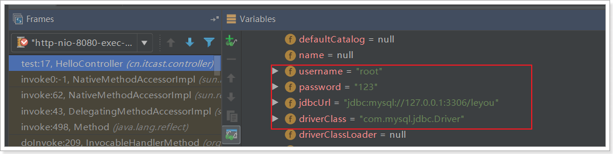
属性注入成功了！
在上面的案例中，我们实验了java配置方式。不过属性注入使用的是@Value注解。这种方式虽然可行，但是不够强大，因为它只能注入基本类型值。
在SpringBoot中，提供了一种新的属性注入方式，支持各种java基本数据类型及复杂类型的注入。
1）新建JdbcProperties，用来进行属性注入：

代码：
package uestc.zhangkx.Config;
import org.springframework.boot.context.properties.ConfigurationProperties;
@ConfigurationProperties(prefix = "jdbc")
public class JdbcProperties {
private String url;
private String driverClassName;
private String username;
private String password;
public String getUrl() {
return url;
}
public void setUrl(String url) {
this.url = url;
}
public String getDriverClassName() {
return driverClassName;
}
public void setDriverClassName(String driverClassName) {
this.driverClassName = driverClassName;
}
public String getUsername() {
return username;
}
public void setUsername(String username) {
this.username = username;
}
public String getPassword() {
return password;
}
public void setPassword(String password) {
this.password = password;
}
}
- 在类上通过@ConfigurationProperties注解声明当前类为属性读取类
prefix="jdbc"读取属性文件中，前缀为jdbc的值。- 在类上定义各个属性，名称必须与属性文件中
jdbc.后面部分一致，并且必须具有getter和setter方法 - 需要注意的是，这里我们并没有指定属性文件的地址，SpringBoot默认会读取文件名为application.properties的资源文件，所以我们把jdbc.properties名称改为application.properties
2）在JdbcConfiguration中使用这个属性：
@Configuration
@EnableConfigurationProperties(JdbcProperties.class)
public class JdbcConfiguration {
@Autowired
private JdbcProperties jdbcProperties;
@Bean
public DataSource dataSource() {
DruidDataSource dataSource = new DruidDataSource();
dataSource.setUrl(jdbcProperties.getUrl());
dataSource.setDriverClassName(jdbcProperties.getDriverClassName());
dataSource.setUsername(jdbcProperties.getUsername());
dataSource.setPassword(jdbcProperties.getPassword());
return dataSource;
}
}
- 通过
@EnableConfigurationProperties(JdbcProperties.class)来声明要使用JdbcProperties这个类的对象 - 然后你可以通过以下方式在JdbcConfiguration类中注入JdbcProperties
属性注入
对于读取properties的方式，有2：
- 使用@PropertySource(“classpath:*.properties”)搭配 @Value(“${jdbc.url}”)取得值，再方法前@Bean放入ioc容器
- 使用@ConfigurationProperties(prefix = “jdbc”)从properties取到JdbcProperties；再通过@EnableConfigurationProperties(JdbcProperties.class)从JdbcProperties取到JdbcConfiguration
取到JdbcConfiguration？什么意思呢？就是说，可以在JdbcConfiguration方法中注入bean了
@Autowired注入
package uestc.zhangkx.Config;
import com.alibaba.druid.pool.DruidDataSource;
import org.springframework.beans.factory.annotation.Autowired;
import org.springframework.beans.factory.annotation.Value;
import org.springframework.boot.context.properties.EnableConfigurationProperties;
import org.springframework.context.annotation.Bean;
import org.springframework.context.annotation.Configuration;
import org.springframework.context.annotation.PropertySource;
import javax.sql.DataSource;
@Configuration
@EnableConfigurationProperties(JdbcProperties.class)
public class JdbcConfig {
@Autowired
private JdbcProperties jdbcProperties;
@Bean
public DataSource dataSource() {
DruidDataSource dataSource = new DruidDataSource();
dataSource.setUrl(jdbcProperties.getUrl());
dataSource.setDriverClassName(jdbcProperties.getDriverClassName());
dataSource.setUsername(jdbcProperties.getUsername());
dataSource.setPassword(jdbcProperties.getPassword());
return dataSource;
}
}
构造函数注入
package uestc.zhangkx.Config;
import com.alibaba.druid.pool.DruidDataSource;
import org.springframework.boot.context.properties.EnableConfigurationProperties;
import org.springframework.context.annotation.Bean;
import org.springframework.context.annotation.Configuration;
import javax.sql.DataSource;
@Configuration
@EnableConfigurationProperties(JdbcProperties.class)
public class JdbcConfig {
private final JdbcProperties jdbcProperties;
public JdbcConfig(JdbcProperties jdbcProperties) {
this.jdbcProperties = jdbcProperties;
}
@Bean
public DataSource dataSource() {
DruidDataSource dataSource = new DruidDataSource();
dataSource.setUrl(jdbcProperties.getUrl());
dataSource.setDriverClassName(jdbcProperties.getDriverClassName());
dataSource.setUsername(jdbcProperties.getUsername());
dataSource.setPassword(jdbcProperties.getPassword());
return dataSource;
}
}
@Bean方法的参数注入
package uestc.zhangkx.Config;
import com.alibaba.druid.pool.DruidDataSource;
import org.springframework.boot.context.properties.EnableConfigurationProperties;
import org.springframework.context.annotation.Bean;
import org.springframework.context.annotation.Configuration;
import javax.sql.DataSource;
@Configuration
@EnableConfigurationProperties(JdbcProperties.class)
public class JdbcConfig {
@Bean
public DataSource dataSource(JdbcProperties jdbcProperties) {
DruidDataSource dataSource = new DruidDataSource();
dataSource.setUrl(jdbcProperties.getUrl());
dataSource.setDriverClassName(jdbcProperties.getDriverClassName());
dataSource.setUsername(jdbcProperties.getUsername());
dataSource.setPassword(jdbcProperties.getPassword());
return dataSource;
}
}
大家会觉得第一个方式似乎更麻烦了，事实上这种方式有更强大的功能，也是SpringBoot推荐的注入方式。两者对比关系：
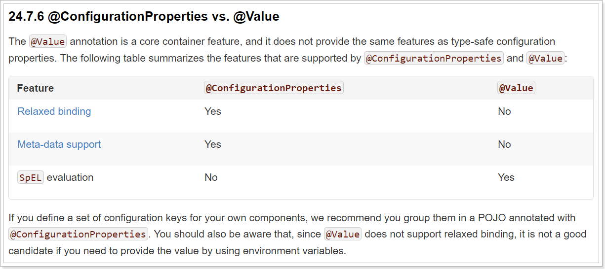
优势：
- Relaxed binding：松散绑定
- 不严格要求属性文件中的属性名与成员变量名一致。支持驼峰，中划线，下划线等等转换，甚至支持对象引导。比如：user.friend.name：代表的是user对象中的friend属性中的name属性，显然friend也是对象。@value注解就难以完成这样的注入方式。
- meta-data support：元数据支持，帮助IDE生成属性提示（写开源框架会用到）。
@ConfigurationProperties方法注入
package uestc.zhangkx.Config;
import com.alibaba.druid.pool.DruidDataSource;
import org.springframework.boot.context.properties.ConfigurationProperties;
import org.springframework.context.annotation.Bean;
import org.springframework.context.annotation.Configuration;
import javax.sql.DataSource;
@Configuration
public class JdbcConfig {
@Bean
@ConfigurationProperties(prefix = "jdbc")
public DataSource dataSource() {
DruidDataSource dataSource = new DruidDataSource();
return dataSource;
}
}
我们直接把@ConfigurationProperties(prefix = "jdbc")声明在需要使用的@Bean的方法上，然后SpringBoot就会自动调用这个Bean（此处是DataSource）的set方法，然后完成注入。使用的前提是：该类必须有对应属性的set方法！
AOP
引入依赖
<!--引入AOP依赖-->
<dependency>
<groupId>org.springframework.boot</groupId>
<artifactId>spring-boot-starter-aop</artifactId>
</dependency>
在完成了引入AOP依赖包后，不需要去做其他配置。AOP的默认配置属性中，spring.aop.auto属性默认是开启的，也就是说只要引入了AOP依赖后，默认已经增加了@EnableAspectJAutoProxy，不需要在程序主类中增加@EnableAspectJAutoProxy来启用。
定义切面类
在类上添加@Aspect 和@Component 注解即可将一个类定义为切面类。
@Aspect 注解 使之成为切面类
@Component 注解 把切面类加入到IOC容器中
package uestc.zhangkx.config;
import org.aspectj.lang.annotation.*;
import org.springframework.stereotype.Component;
@Aspect
@Component
public class BrokerAspect {
/**
* 定义切入点，切入点为uestc.zhangkx.controller.AopController中的所有函数
*通过@Pointcut注解声明频繁使用的切点表达式
*/
@Pointcut("execution(public * uestc.zhangkx.controller.AopController.*(..)))")
public void BrokerAspect(){
}
/**
* @description 在连接点执行之前执行的通知
*/
@Before("BrokerAspect()")
public void doBeforeGame(){
System.out.println("经纪人正在处理球星赛前事务！");
}
/**
* @description 在连接点执行之后执行的通知（返回通知和异常通知的异常）
*/
@After("BrokerAspect()")
public void doAfterGame(){
System.out.println("经纪人为球星表现疯狂鼓掌！");
}
/**
* @description 在连接点执行之后执行的通知（返回通知）
*/
@AfterReturning("BrokerAspect()")
public void doAfterReturningGame(){
System.out.println("返回通知：经纪人为球星表现疯狂鼓掌！");
}
/**
* @description 在连接点执行之后执行的通知（异常通知）
*/
@AfterThrowing("BrokerAspect()")
public void doAfterThrowingGame(){
System.out.println("异常通知：球迷要求退票！");
}
}
执行测试
调用服务http://localhost:8080/aopController/Harden，输出结果：

切点表达式用于描述切点的位置信息，在此简单描述文中切点表达式的含义。

环绕通知
这里单独讲解一下功能强大的环绕通知，环绕通知可以将你所编写的逻辑将被通知的目标方法完全包装起来。我们可以使用一个环绕通知来代替之前多个不同的前置通知和后置通知。如下所示，前置通知和后置通知位于同一个方法中，不像之前那样分散在不同的通知方法里面。
环绕通知接受ProceedingJoinPoint作为参数，它来调用被通知的方法。通知方法中可以做任何的事情，当要将控制权交给被通知的方法时，需要调用ProceedingJoinPoint的proceed()方法。当你不调用proceed()方法时，将会阻塞被通知方法的访问。当通知方法需要传入参数我们又该怎样处理呢？
和之前创建的切面一样，这里的不同点在于切点还声明了要提供给通知方法的参数。
切点表达式args(point)表明传递给GameDataAspect()方法中的int类型参数也会传递到通知中去，参数名point和缺点方法签名中的参数相匹配
package uestc.zhangkx.config;
import org.aspectj.lang.ProceedingJoinPoint;
import org.aspectj.lang.annotation.Around;
import org.aspectj.lang.annotation.Aspect;
import org.aspectj.lang.annotation.Pointcut;
import org.springframework.stereotype.Component;
@Aspect
@Component
public class GameDataAspect {
/**
* 定义切入点，切入点为uestc.zhangkx.controller.AopController中的所有函数
*通过@Pointcut注解声明频繁使用的切点表达式
*/
@Pointcut("execution(public * uestc.zhangkx.controller.AopController.Durant(int)) && args(point))")
public void GameDataAspect(int point){
}
/**
* @description 使用环绕通知
*/
@Around("GameDataAspect(point)")
public void doAroundGameData(ProceedingJoinPoint pjp, int point) throws Throwable {
try{
System.out.println("球星上场前热身！");
pjp.proceed();
System.out.println("球星本场得到" + point + "分" );
}
catch(Throwable e){
System.out.println("异常通知：球迷要求退票！");
}
}
}
执行：
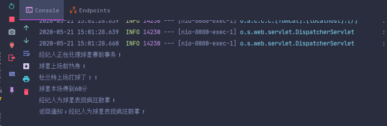
整合springMVC
虽然默认配置已经可以使用SpringMVC了，不过我们有时候需要进行自定义配置。
修改端口
添加全局配置文件：application.properties
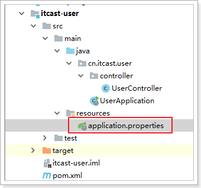
端口通过以下方式配置
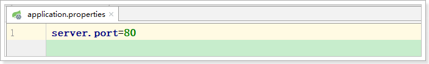
# 映射端口
server.port=80
重启服务后测试：
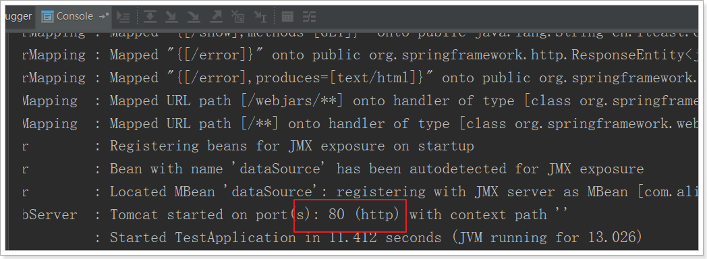
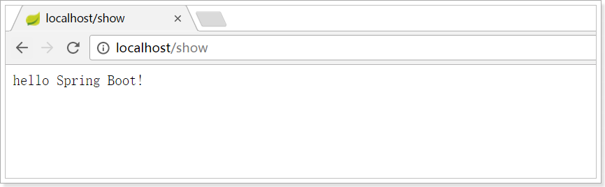
访问静态资源
现在，我们的项目是一个jar工程，那么就没有webapp，我们的静态资源该放哪里呢？
回顾我们上面看的源码，有一个叫做ResourceProperties的类，里面就定义了静态资源的默认查找路径： 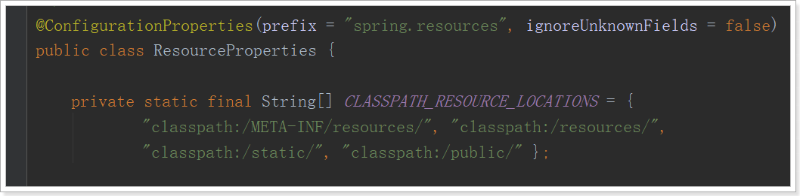
默认的静态资源路径为：
- classpath:/META-INF/resources/
- classpath:/resources/
- classpath:/static/
- classpath:/public/
只要静态资源放在这些目录中任何一个，SpringMVC都会帮我们处理。
我们习惯会把静态资源放在classpath:/static/目录下。我们创建目录，并且添加一些静态资源：
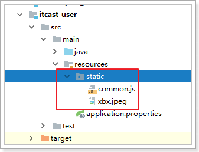
重启项目后测试：
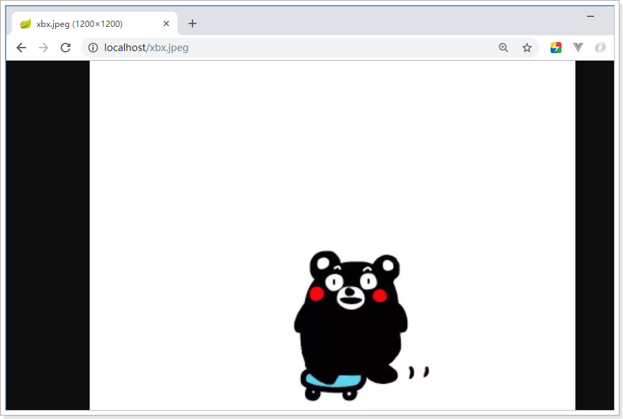
添加拦截器
拦截器也是我们经常需要使用的，在SpringBoot中该如何配置呢？
拦截器不是一个普通属性，而是一个类，所以就要用到java配置方式了。在SpringBoot官方文档中有这么一段说明：
If you want to keep Spring Boot MVC features and you want to add additional MVC configuration (interceptors, formatters, view controllers, and other features), you can add your own
@Configurationclass of typeWebMvcConfigurerbut without@EnableWebMvc. If you wish to provide custom instances ofRequestMappingHandlerMapping,RequestMappingHandlerAdapter, orExceptionHandlerExceptionResolver, you can declare aWebMvcRegistrationsAdapterinstance to provide such components.If you want to take complete control of Spring MVC, you can add your own
@Configurationannotated with@EnableWebMvc.
翻译：
如果你想要保持Spring Boot 的一些默认MVC特征，同时又想自定义一些MVC配置（包括：拦截器，格式化器, 视图控制器、消息转换器 等等），你应该让一个类实现
WebMvcConfigurer，并且添加@Configuration注解，但是千万不要加@EnableWebMvc注解。如果你想要自定义HandlerMapping、HandlerAdapter、ExceptionResolver等组件，你可以创建一个WebMvcRegistrationsAdapter实例 来提供以上组件。如果你想要完全自定义SpringMVC，不保留SpringBoot提供的一切特征，你可以自己定义类并且添加
@Configuration注解和@EnableWebMvc注解
总结：通过实现WebMvcConfigurer并添加@Configuration注解来实现自定义部分SpringMvc配置。
实现如下：
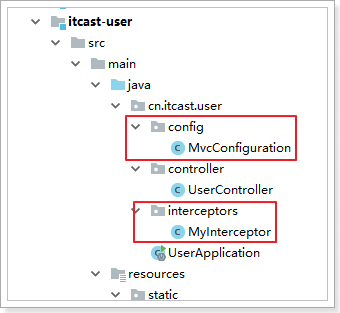
首先我们定义一个拦截器：
@Component
public class MyInterceptor implements HandlerInterceptor {
@Override
public boolean preHandle(HttpServletRequest request, HttpServletResponse response, Object handler) throws Exception {
System.out.println("preHandle method is running!");
return true;
}
@Override
public void postHandle(HttpServletRequest request, HttpServletResponse response, Object handler, ModelAndView modelAndView) throws Exception {
System.out.println("postHandle method is running!");
}
@Override
public void afterCompletion(HttpServletRequest request, HttpServletResponse response, Object handler, Exception ex) throws Exception {
System.out.println("afterCompletion method is running!");
}
}
然后定义配置类，注册拦截器：
@Configuration
public class MvcConfiguration implements WebMvcConfigurer {
@Autowired
private HandlerInterceptor myInterceptor;
/**
* 重写接口中的addInterceptors方法，添加自定义拦截器
* @param registry
*/
@Override
public void addInterceptors(InterceptorRegistry registry) {
registry.addInterceptor(myInterceptor).addPathPatterns("/**");
}
}
接下来运行并查看日志：
preHandle method is running!
postHandle method is running!
afterCompletion method is running!
你会发现日志中只有这些打印信息，springMVC的日志信息都没有，因为springMVC记录的log级别是debug，springboot默认是显示info以上，我们需要进行配置。
SpringBoot通过logging.level.*=debug来配置日志级别，*填写包名
# 设置org.springframework包的日志级别为debug
logging.level.org.springframework=debug
再次运行查看：
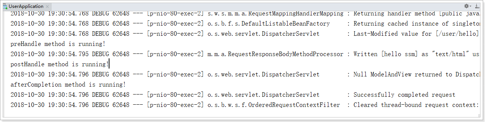
整合mybatis
添加Mybatis的起步依赖
<!--mybatis起步依赖-->
<dependency>
<groupId>org.mybatis.spring.boot</groupId>
<artifactId>mybatis-spring-boot-starter</artifactId>
<version>1.1.1</version>
</dependency>
添加数据库驱动坐标
<!-- MySQL连接驱动 -->
<dependency>
<groupId>mysql</groupId>
<artifactId>mysql-connector-java</artifactId>
</dependency>
添加数据库连接信息
在application.properties中添加数据量的连接信息
#DB Configuration:
spring.datasource.driverClassName=com.mysql.jdbc.Driver
spring.datasource.url=jdbc:mysql:///mybatis/test?useUnicode=true&characterEncoding=utf-8&useSSL=false
spring.datasource.username=root
spring.datasource.password=root
创建user表
在test数据库中创建user表
-- ----------------------------
-- Table structure for `user`
-- ----------------------------
DROP TABLE IF EXISTS `user`;
CREATE TABLE `user` (
`id` int(11) NOT NULL AUTO_INCREMENT,
`username` varchar(50) DEFAULT NULL,
`password` varchar(50) DEFAULT NULL,
`name` varchar(50) DEFAULT NULL,
PRIMARY KEY (`id`)
) ENGINE=InnoDB AUTO_INCREMENT=10 DEFAULT CHARSET=utf8;
-- ----------------------------
-- Records of user
-- ----------------------------
INSERT INTO `user` VALUES ('1', 'zhangsan', '123', '张三');
INSERT INTO `user` VALUES ('2', 'lisi', '123', '李四');
创建实体Bean
public class User {
// 主键
private Long id;
// 用户名
private String username;
// 密码
private String password;
// 姓名
private String name;
//此处省略getter和setter方法 .. ..
}
编写Mapper
@Mapper
public interface UserMapper {
public List<User> queryUserList();
}
注意：@Mapper标记该类是一个mybatis的mapper接口，可以被spring boot自动扫描到spring上下文中
配置Mapper映射文件
在src\main\resources\mapper路径下加入UserMapper.xml配置文件”
<?xml version="1.0" encoding="utf-8" ?>
<!DOCTYPE mapper PUBLIC "-//mybatis.org//DTD Mapper 3.0//EN" "http://mybatis.org/dtd/mybatis-3-mapper.dtd" >
<mapper namespace="com.itheima.mapper.UserMapper">
<select id="queryUserList" resultType="user">
select * from user
</select>
</mapper>
在application.properties中添加mybatis的信息
#spring集成Mybatis环境
#pojo别名扫描包
mybatis.type-aliases-package=com.itheima.domain
#加载Mybatis映射文件
mybatis.mapper-locations=classpath:mapper/*Mapper.xml
编写测试Controller
@Controller
public class MapperController {
@Autowired
private UserMapper userMapper;
@RequestMapping("/queryUser")
@ResponseBody
public List<User> queryUser(){
List<User> users = userMapper.queryUserList();
return users;
}
}
测试
整合Junit
添加Junit的起步依赖
<!--测试的起步依赖-->
<dependency>
<groupId>org.springframework.boot</groupId>
<artifactId>spring-boot-starter-test</artifactId>
<scope>test</scope>
</dependency>
编写测试类
package com.itheima.test;
import com.itheima.MySpringBootApplication;
import com.itheima.domain.User;
import com.itheima.mapper.UserMapper;
import org.junit.Test;
import org.junit.runner.RunWith;
import org.springframework.beans.factory.annotation.Autowired;
import org.springframework.boot.test.context.SpringBootTest;
import org.springframework.test.context.junit4.SpringRunner;
import java.util.List;
@RunWith(SpringRunner.class)
@SpringBootTest(classes = MySpringBootApplication.class)
public class MapperTest {
@Autowired
private UserMapper userMapper;
@Test
public void test() {
List<User> users = userMapper.queryUserList();
System.out.println(users);
}
}
其中，
SpringRunner继承自SpringJUnit4ClassRunner，使用哪一个Spring提供的测试测试引擎都可以
public final class SpringRunner extends SpringJUnit4ClassRunner
@SpringBootTest的属性指定的是引导类的字节码对象
控制台打印信息
整合Spring Data JPA
添加Spring Data JPA的起步依赖
<!-- springBoot JPA的起步依赖 -->
<dependency>
<groupId>org.springframework.boot</groupId>
<artifactId>spring-boot-starter-data-jpa</artifactId>
</dependency>
添加数据库驱动依赖
<!-- MySQL连接驱动 -->
<dependency>
<groupId>mysql</groupId>
<artifactId>mysql-connector-java</artifactId>
</dependency>
在application.properties中配置数据库和jpa的相关属性
#DB Configuration:
spring.datasource.driverClassName=com.mysql.jdbc.Driver
spring.datasource.url=jdbc:mysql:///mybatis/test?useUnicode=true&characterEncoding=utf-8&useSSL=false
spring.datasource.username=root
spring.datasource.password=root
#JPA Configuration:
spring.jpa.database=MySQL
spring.jpa.show-sql=true
spring.jpa.generate-ddl=true
spring.jpa.hibernate.ddl-auto=update
spring.jpa.hibernate.naming_strategy=org.hibernate.cfg.ImprovedNamingStrategy
创建实体配置实体
@Entity
public class User {
// 主键
@Id
@GeneratedValue(strategy = GenerationType.IDENTITY)
private Long id;
// 用户名
private String username;
// 密码
private String password;
// 姓名
private String name;
//此处省略setter和getter方法... ...
}
编写UserRepository
public interface UserRepository extends JpaRepository<User,Long>{
public List<User> findAll();
}
编写测试类
@RunWith(SpringRunner.class)
@SpringBootTest(classes=MySpringBootApplication.class)
public class JpaTest {
@Autowired
private UserRepository userRepository;
@Test
public void test(){
List<User> users = userRepository.findAll();
System.out.println(users);
}
}
控制台打印信息

注意：如果是jdk9，执行报错如下：

原因：jdk缺少相应的jar
解决方案：手动导入对应的maven坐标，如下：
<!--jdk9需要导入如下坐标-->
<dependency>
<groupId>javax.xml.bind</groupId>
<artifactId>jaxb-api</artifactId>
<version>2.3.0</version>
</dependency>
整合Redis
添加redis的起步依赖
<!-- 配置使用redis启动器 -->
<dependency>
<groupId>org.springframework.boot</groupId>
<artifactId>spring-boot-starter-data-redis</artifactId>
</dependency>
配置redis的连接信息
#Redis
spring.redis.host=127.0.0.1
spring.redis.port=6379
注入RedisTemplate测试redis操作
@RunWith(SpringRunner.class)
@SpringBootTest(classes = SpringbootJpaApplication.class)
public class RedisTest {
@Autowired
private UserRepository userRepository;
@Autowired
private RedisTemplate<String, String> redisTemplate;
@Test
public void test() throws JsonProcessingException {
//从redis缓存中获得指定的数据
String userListData = redisTemplate.boundValueOps("user.findAll").get();
//如果redis中没有数据的话
if(null==userListData){
//查询数据库获得数据
List<User> all = userRepository.findAll();
//转换成json格式字符串
ObjectMapper om = new ObjectMapper();
userListData = om.writeValueAsString(all);
//将数据存储到redis中，下次在查询直接从redis中获得数据，不用在查询数据库
redisTemplate.boundValueOps("user.findAll").set(userListData);
System.out.println("===============从数据库获得数据===============");
}else{
System.out.println("===============从redis缓存中获得数据===============");
}
System.out.println(userListData);
}
}